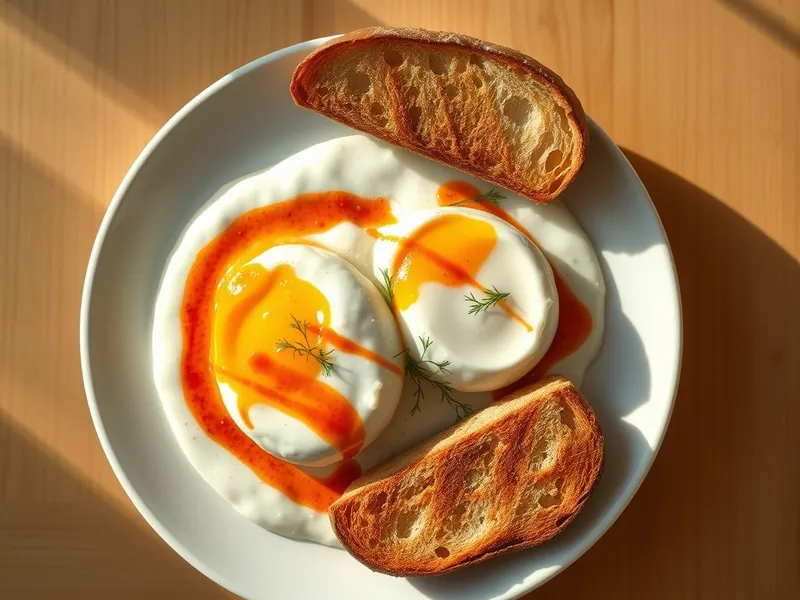

Фото: Иллюстрация ИИ, Cloudflare Workers AI
Чылбыр (яйца пашот на йогурте)
Турецкие яйца пашот на чесночном йогурте, политые сливочным маслом с паприкой
20 мин2 порц.562 ккал на порциюБ 34 · Ж 30 · У 38Средиземноморская кухня
Продукты на 2 порц.
- Яйцо куриное4 шт
- Греческий йогурт300 г
- Чеснок1 зуб.
- Сливочное масло30 г
- Паприка1 ч. л.
- Уксус 9%1 ст. л.
- Вода1500 мл
- Соль1 щеп.
- Хлеб белый4 шт
- Укроп по желаниюпо вкусу
Как готовить
- Смешайте йогурт с натёртым чесноком и щепоткой соли, разложите по тарелкам и оставьте при комнатной температуре, пока готовите яйца.
- Вскипятите в сотейнике 1,5 л воды с уксусом и убавьте огонь до слабого, чтобы вода едва кипела.
- Разбейте яйцо в чашку, закрутите воду ложкой воронкой и вылейте яйцо в центр. Варите 3-4 минуты, пока белок не схватится, а желток останется жидким. Достаньте шумовкой и так же сварите остальные яйца.
- Растопите сливочное масло на слабом огне, всыпьте паприку и прогрейте 30 секунд, пока масло не станет красным. Не давайте ему пригореть.
- Выложите яйца на йогурт, полейте красным маслом и посыпьте укропом. Подавайте с поджаренным хлебом.
Совет. Для пашота берите самые свежие яйца: у них белок плотный и не расползается в воде.